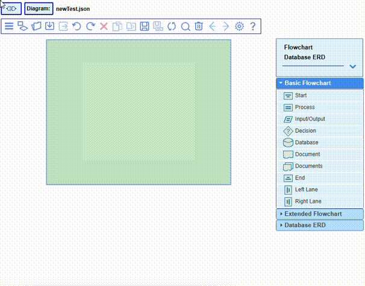

Build a diagram by simply drag-and-drop nodes from the palette
and by dragging links between the nodes, connecting the popup handles with the mouse.
Note that when selecting(clicking) a popup handle, the handles that potentially can accept
a connection between certain nodes will become lightly highlighted. The connection is accepted
when the connection line dragged by the mouse reaches one of these handles and the highlight color
changes to a darker blue.
